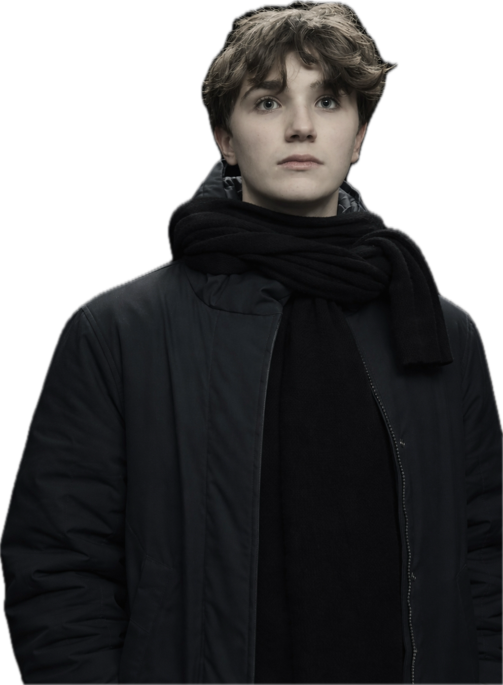

MMXXVI · BERGAMO · IT · Studente & curioso
Scorri
I
Chi sono
Una mente curiosa, tra numeri e parole.
A.
Ho sedici anni e vivo a Bergamo. Frequento il Liceo Scientifico Lorenzo Mascheroni, indirizzo scienze applicate. Alla scuola media ho concluso con dieci e lode, un piccolo traguardo che porto con me come promemoria del metodo che cerco di coltivare ogni giorno.
Ho imparato presto a non scegliere tra umanistico e scientifico: leggo, studio, scrivo.
«Conoscere non basta; dobbiamo applicare. Volere non basta; dobbiamo fare.»
La mia ambizione? Essere ammesso all'università dei miei sogni. Questo sito è la mappa di come ci sto arrivando: certificazioni, esperienze, progetti, letture. Un archivio vivo, che si aggiorna con me.
II
Esperienze
Ciò che ho vissuto.
III
Educazione
Il mio percorso.
IV
Certificazioni
Certificazioni conseguite.
V
Lingue